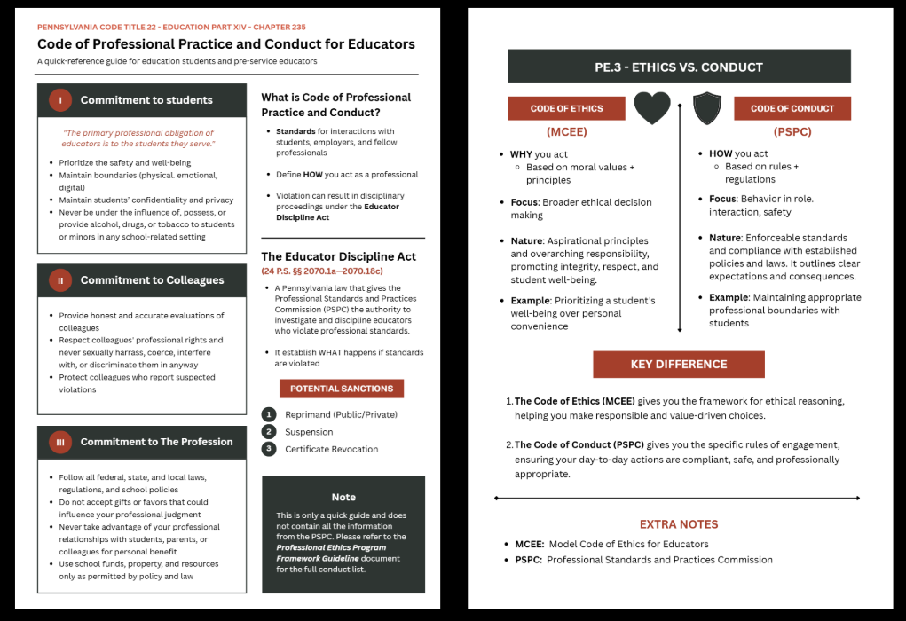
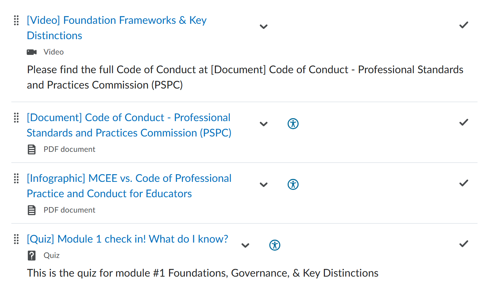
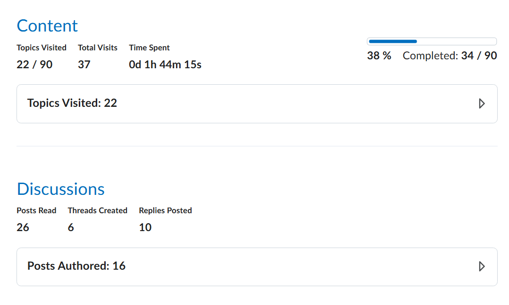

◇ CHAPTER 02
Ethics course for educators to meet state requirements
DIFFICULTY
★★★★☆
PARTY SIZE
Solo IDer
DURATION
12 weeks
STATUS
● Cleared
▸ MISSION BRIEFING - THE PROBLEM
Ethics content with no centralized home.
Ethics content was scattered across coursework with no centralized home, no consistent delivery, and no documented alignment to PA Department of Education standards. Future teachers were getting an uneven foundation on something that genuinely matters.
⚠ ACTIVE DEBUFFS ON PARTY
DEBUFF · 01
No centralized home for ethics instruction.
DEBUFF · 02
No documented alignment to PA DOE standards.
DEBUFF · 03
No consistent delivery across the program.
◆ STRATEGY - THE SOLUTION
CHOSEN APPROACH
A self-paced module where learners decide, not just watch.
A scenario-driven eLearning module hosted in Brightspace. Three modules, one mastery test, Vyond-animated videos dropping learners into real classroom dilemmas - and auto-graded everything so it scales without burning out the professor.
✦ BUFFS GAINED
3 scaffolded modules
Auto-graded (zero professor grading)
Vyond scenario videos
80% mastery threshold
◇ DUNGEON MAP - MY PROCESS
5 STAGES · ALL CLEARED
From stakeholder interviews to a live Brightspace module.
i
STAGE 01
Analysis
Stakeholder interviews & doc review
ii
STAGE 02
Design
Scaffold & learning objectives
iii
STAGE 03
Development
Vyond + Storyline + SCORM
iv
STAGE 04
Implementation
Deployed in Brightspace
v
⚔ BOSS · STAGE 05
Evaluation
Pilot test & revision
i
STAGE 01 · ANALYSIS
Three domains, one clear gap.
Analysis was conducted across task, environment, and technology domains through document review of PDE guidelines and existing course materials, and informal interviews with the client.

▸ KEY FINDINGS
↳ Pennsylvania requires teachers to have ethics competency. However, current ethics content at Commonwealth University is not unified in one place.
↳ Core competencies: ethical decision-making, professional code of conduct, and inclusive language
↳ Client preferred self-paced and interactive experiences over passive learning
↳ All assessments needed to be self-grading
↳ Delivery format: online via Brightspace
+50 XP · STAGE CLEARED
ii
STAGE 02 · DESIGN
Built backward from a single goal.
Async, interactive, ~1 hour. Instructional goal: students apply PA Professional Ethics competencies and the Model Code of Ethics for Educators with 80% accuracy.

▸ CURRICULUM STRUCTURE
↳ Module 1 — Foundation Frameworks(PE.1–PE.3)
↳ Module 2 — 5 MCEE Principles(PE.4–PE.8)
↳ Module 3 — Disability Competencies
↳ Content formats: animated videos, interactive scenarios, infographics, and official PDE documents
↳ Self-graded knowledge checks and mastery test administered in Brightspace with 80% required to pass
+100 XP · STAGE CLEARED
iii
STAGE 03 · DEVELOPMENT
Strategy into assets.
Each tool was chosen for a reason - Vyond for the scenario videos that make ethical dilemmas feel real, Storyline for the interactions, Brightspace for the delivery.

▸ BUILD STACK
↳ Vyond - Animated scenario videos as the primary instructional vehicle
↳ Canva - Infographics with the PA Model Code of Ethics principles and Pennsylvania's Code of Conduct
↳ Articulate Storyline - Interactive decision-making scenarios, drag-and-drop activities, and self-reflection prompts
↳ Assessment: End-of-module quizzes + 10-item final test in Brightspace for auto-graded activities
+150 XP · STAGE CLEARED
iv
STAGE 04 · IMPLEMENTATION
Review, test, deploy.
A structured process of development, review, testing, and deployment — with weekly client check-ins and a full contingency plan in place before go-live.

▸ DEPLOYMENT CHECKLIST
↳ 1-to-1 evaluations with Dr. Drogan for content accuracy + PDE alignment
↳ Group testing to catch ambiguities in instructions and questions
↳ Fully async, self-paced - 24/7 access via university credentials
↳ Person-first language modeled throughout at 11th-12th grade reading level
↳ Contingency plan: LMS integration, learner access, assessment tracking, communication failures
↳ Hand-off: SCORM 1.2 package, raw source files, scripts, storyboards, full project report
+150 XP · STAGE CLEARED
⚔ BOSS STAGE
v
STAGE 05 · EVALUATION
Formative + summative, grounded in Kirkpatrick.
Formative evaluation with SMEs and five grad students caught two real issues — both fixed before launch. Summative evaluation uses Kirkpatrick's four-level model.

▸ FORMATIVE
↳ 1-to-1 SME review - ambiguous scenario question rewritten, change sensitive wordings to more flexible ones
↳ Small group trial (5 grad students) - drag-and-drop instructions clarified, UI improvements
▸ SUMMATIVE - KIRKPATRICK MODEL
↳ Level 1 (Reaction) - LMS analytics: completion rates, video viewing, time-on-task, quiz performance
↳ Level 2 (Learning) - Cumulative auto-graded final exam across all 3 modules; 80% required to pass + learner survey
+200 XP · BOSS DEFEATED
★ ★ ★ VICTORY ★ ★ ★
Quest Complete - The Result
One cohesive module that future teachers will actually finish. 80% mastery threshold. Fully aligned to PE.1-PE.8 and the MCEE. Sustainable for the department and accessible for learners.
★ TOTAL XP EARNED+1,200 / 1,200